악명 높은 CORS 에러 메세지
웹 개발을 하다보면 반드시 마주치는 에러가 CORS이다.
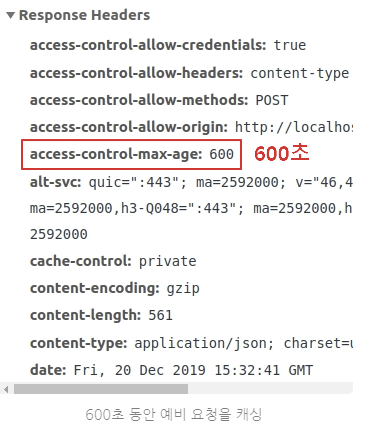
프론트엔드 개발자 입장에서 요청 코드를 이상하게 적은 것도 아니고, 백엔드 개발자 입장에선 서버 코드나 세팅이 이상한 것도 아니다.
→ 이러한 현상이 일어나는 이���는, 웹 브라우저는 HTTP 요청에 대해서 어떤 요청을 하느냐에 따라 각기 다른 특징을 가지고 있기 때문이다.
요청 방식에 따라 다른 CORS 발생 여부
- <img>, <video>, <script>, <link> 태그 등
기본적으로 Cross-Origin 정책을 지원함
- XMLHttpRequest, Fetch API 스크립트
- 기본적으로 Same-Origin 정책을 따름
자바스크립트에서의 요청은 기본적으로 서로 다른 도메인에 대한 요청을 보안상 제한 한다. 브라우저는 기본으로 하나의 서버 연결만 허용되도록 설정되어 있기 때문이다.
<body>
<img src="https://third-party-test.glitch.me/check.svg" alt="이미지">
<script>
fetch('https://third-party-test.glitch.me/check.svg')
.then(response => response.blob())
.then(imgBlob => {
const imageObjectURL = URL.createObjectURL(imgBlob); // 응답 받은 이미지를 blob 객체로 변환
const img = document.createElement('img'); // 이미지 태그를 생성하고
img.src = imageObjectURL; // 이미지 경로를 설정한뒤
document.body.append(img); // html에 추가
})
</script>
</body>- 실행결과
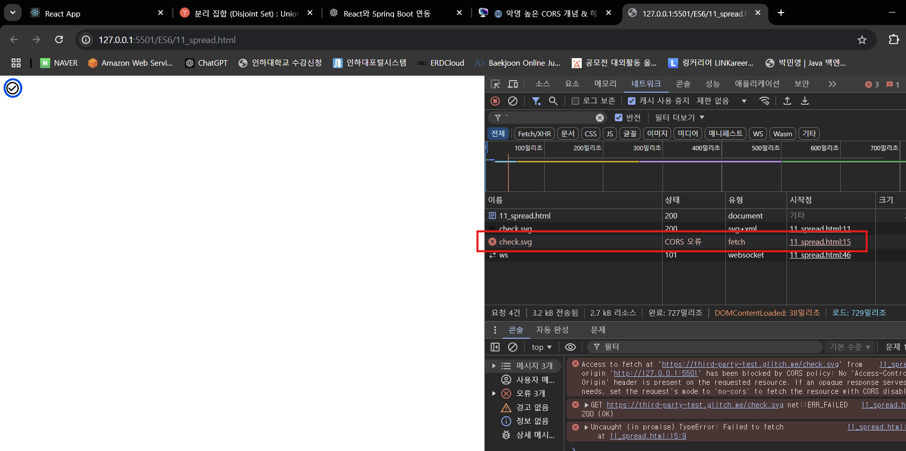
- fetch로 이미지 불러온 것을 status가 CORS 에러가 뜨는 것을 볼 수 있다.
CORS란?
CORS는 Cross-Origin Resource Sharing의 약자로 해석해보면 ‘교차 출처 리소스 공유 정책’ 이라고 해석할 수 있다.
여기서 교차 출처란 (엇갈린) 다른 출처를 의미하는 것으로 보면 된다.
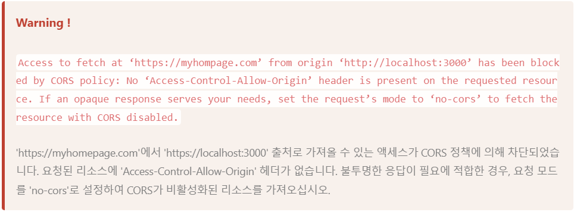
출처(Origin)이란?
우리가 어떤 사이트를 접속할 때, 인터넷 주소창에 우리는 URL이라는 문자열을 통해 접근하게 된다.
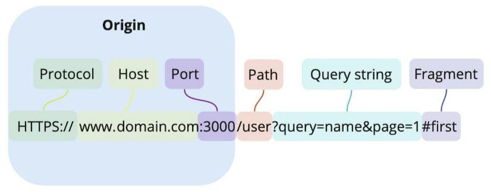
- Protocol : http or https
- Host: 사이트 도메인
- 포트
- Path : 사이트 내부 경로
- Query string : 요청의 key와 value 값
- Fragment : 해시 태그
Origin : Protocol + Host + Port
동일 출처 정책(Same-Origin Policy)
Same Origin Policy 정책은 단어 그대로 동일한 출처에 대한 정책을 말한다.
즉, 동일출처 서버에 있는 리소스는 자유로이 가져올 수 있지만, 다른 출처(Cross-Origin) 서버에 있는 이미지나 유튜브 영상 같은 리소스는 상호작용이 불가능하다는 것이다.
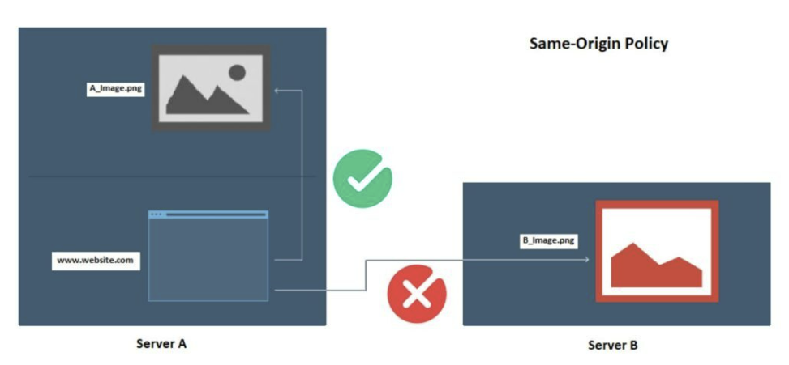
동일 출처 정책이 필요한 이유
만약 제약이 없다면, 해커가 CSRF나 XSS 등의 방법을 이용해서 우리가 만든 어플리케이션에서 해커가 심어놓은 코드가 실행하여 개인 정보를 가로챌 수 있다.
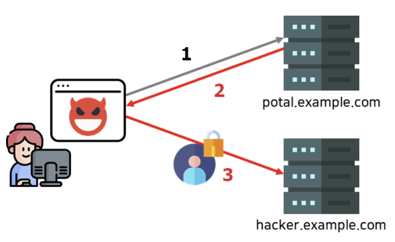
- 사용자가 악성 사이트에 접속한다.
- 이때 해커가 몰래 심어 놓은 악의적인 자바스크립트가 실행되어, 사용자가 모르는 사이에 어느 포털 사이트에 요청을 보낸다
- 그럼 포털 사이트에서 해당 브라우저의 쿠키를 이용하여 로그인을 하거나 개인정보를 받은 뒤, 사이트에서 해커 서버로 재차 보낸다
같은 출처와 다른 출처 구분 기준
위에서 봤듯이 Protocol, Host, Port 이 3가지만 동일하면 동일 출처로 판단한다.
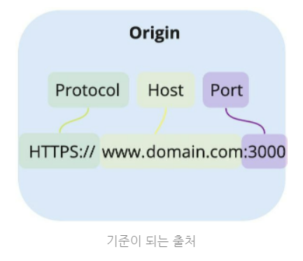
https://www.domain.com:3000 와 동일 출처인 URL 판단하
| URL | 동일 출처 | 이유 |
| https://www.domain.com:3000/about | 0 | 프로토콜, 호스트, 포트 번호 동일 |
| https://www.domain.com:3000/about?search=hello | 0 | 프로토콜, 호스트, 포트 번호 동일 |
| http://www.domain.com:3000/about | x | 프로토콜 다름 (http≠ https) |
| https://www.another.com:3000/about | x | 호스트 다름 |
| https://www.domain.com:8888 | x | 포트 번호 다름 |
| https://www.domain.com | x | 포트 번호 다름 |
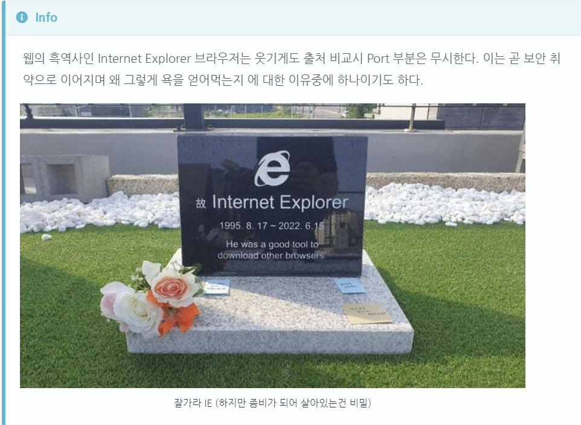
출처 비교와 차단은 브라우저가 한다.
출처를 비교하는 로직은 서버에 구현된 스펙이 아닌 브라우저에 구현된 스펙이 아닌 브라우저에 구현된 스펙이다.
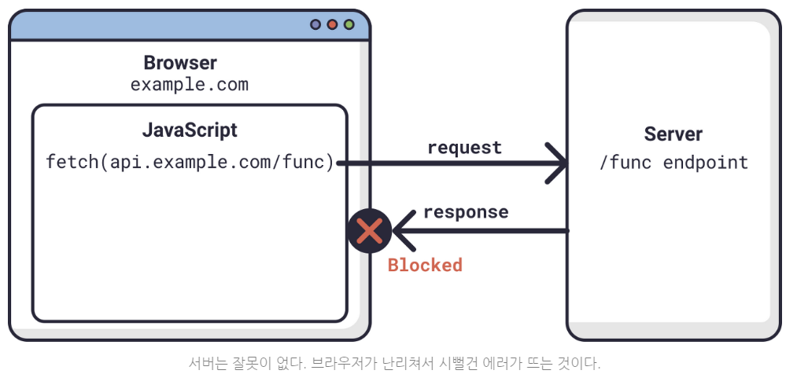
사실 서버는 리소르 요청에 의한 응답은 말끔히 해주었다. 하지만 이 응답을 분석해서 동일 출처가 아니면 시원~하게 에러를 내뿜는다.
그래서 브라우저에는 에러가 뜨지만, 정작 서버 쪽에는 정상적으로 응답을 했다고 하기 때문에 난항을 겪는 것이다.
즉, 응답 데이터는 멀쩡하지만 브라우저에서 받��� 수 없도록 차단한 것이다.
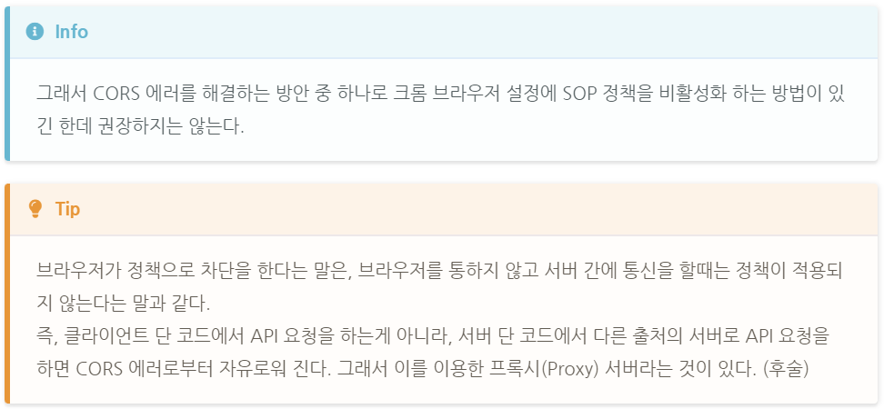
교차 출처 리소스 공유(Cross-Origin Resource Sharing)(CORS)
이처럼 교차 출처 리소스 공유는 단어 그대로 다른 출처의 리소스 공유에 대한 허용/비허용 정책이다.
아무리 보안이 중요하지만, 개발을 하다 보면 기능상 어쩔 수 없이 다른 출처간의 상호작용을 해야하는 케��스도 있으며, 또한 실무적으로 다른 회사의 서버 API를 이용해야 하는 상황도 존재한다.
따라서 이와 같은 예외 사항을 두기 위해 CORS 정책을 허용하는 리소스에 한해 다른 출처라도 받아들인다는 것이다.
- 우리가 욕했던 CORS는 사실 해결책이었다.
결국 웹 개발자를 괴롭히던 빨간 에러 메세지는 사실 브라우저의 SOP 정책에 따라 다른 출처의 리소르를 차단하면서 발생된 에러이며, CORS는 다른 출처의 리소스를 얻기 위한 해결 방안이였던 것이다.
요약하자면 SOP 정책을 위반해도 CORS 정책에 따르면 다른 출처의 리소스라도 허용한다는 뜻이다.
그러면 어떻게 CORS 정책을 따르게 하여 SOP 정책을 회피할 수 있을까? 이를 알기 위해서는 브라우저의 CORS 동작 과정을 살펴보아야 한다.
브라우저의 CORS 기본 동작 ��펴보기
- 클라이언트에서 HTTP 요청의 헤더에 Origin을 담아 전달
- 기본적으로 웹을 HTTP 프로토콜을 이용하여 서버에 요청을 보내게 되는데, 이때 브라우저는 요청 헤더에 Origin 이라는 필드에 출처를 함께 담아 보내게 된다.
- 서버는 응답헤더에 Access-Control-Allow-Origin을 담아 클라이언트로 전달한다.
- 이후 서버가 이 요청에 대한 응답을 할 때 응답 헤더에
Access-Control-Allow-Origin이라는 필드를 추가하고 값으로 ‘이 리소스를 접근하는 것이 허용된 출처 url’을 내려보낸다
- 이후 서버가 이 요청에 대한 응답을 할 때 응답 헤더에
- 클라이언트에서 Origin과
서버가 보내준Access-Control-Allow-Origin을 비교한다.- 이후 응답을 받은 브라우저는 자신이 보냈던 요청의 Origin 과 서버가 보내준 응답의
Access-Control-Allow-Origin을 비교해본 후 차단할지 말지를 결정한다. - 만약 유효하지 않다면 그 응답을 사용하지 않고 CORS 에러를 나타낸다.
- 위의 경우에는 둘 다 http://localhost:3000이기 때문에 유효하니 다른 출처의 리소르를 문제없이 가져오게 된다.
- 이후 응답을 받은 브라우저는 자신이 보냈던 요청의 Origin 과 서버가 보내준 응답의
(결론) 결국 CORS 해결책은 서버의 허용이 필요하다
결국엔 돌고 돌아 서버에서 Access-Control-Allow-Origin 헤더에 허용할 출처를 기재해서 클라이언트에 응답하면 되는 것이다.
백엔드 잘못이 아니라고 했지만 사실은 백엔드 잘못이다 ㅋㅁㅋ
CORS 작동 방식 3가지 시나리오
1. 예비 요청 (Preflight Request)
사실 브라우저는 요청을 보낼 때, 한번에 바로 보내지 않고, 먼저 예비 요청을 보내 서버와 잘 통신이 되는지 확인한 후 본 요청을 보낸다.
즉, 예비 요청의 역할은 본 요청을 보내기 전에 브라우저 스스로 안전한 요청인지 미리 확인하는 것이다.
이때 브라우저가 예비요청을 보내는 것을 Preflight라고 부르며, 이 예비요청의 HTTP 메서드를 GET이나 POST 가 아닌 OPTIONS라는 요청이 사용된다는 것이 특징이다.
- 다음은 위의 내용에 대한 과정이다.
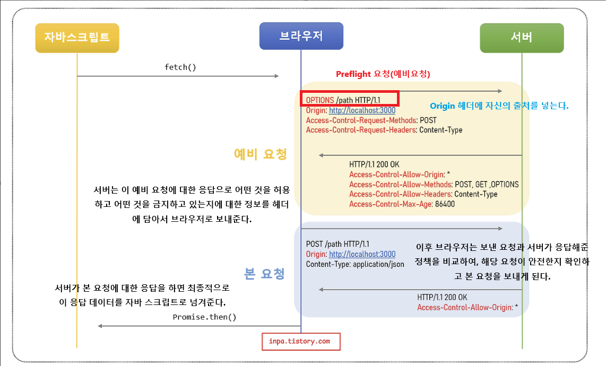
- 예비 요청의 문제점과 캐싱
- 요청을 보내기 전에 OPTIONS 메서드로 예비 요청을 보내 보안을 강화하는 목적의 취지는 좋지만, 이에 따라 당연히 실제 요청에 걸리는 시간이 늘어나게 된다.
- 특히 수행하는 API 호출 수가 많으면 많을 수록 예비 요청으로 인해 서버 요청을 배로 보내게 되니 비용적인 측면에서 손해다.
- 따라서 브라우저 캐시를 이용해
Access-Control-Max-Age헤더에 캐시될 시간으 ㄹ명시해주면, 이 Preflight 요청을 캐싱시켜 최적화를 시켜줄 수 있다.
2. 단순 요청(Simple Request)
단순 요청은 말 그대로 예비 요청(Preflight)을 생략하고 바로 본 요청을 보낸 후, 서버가 이에 대한 응답의 헤더에 Access-Control-Allow-Origin 헤더를 보내주며느 브라우저가 CORS 정책 위한 여부를 검사하는 방식이다.
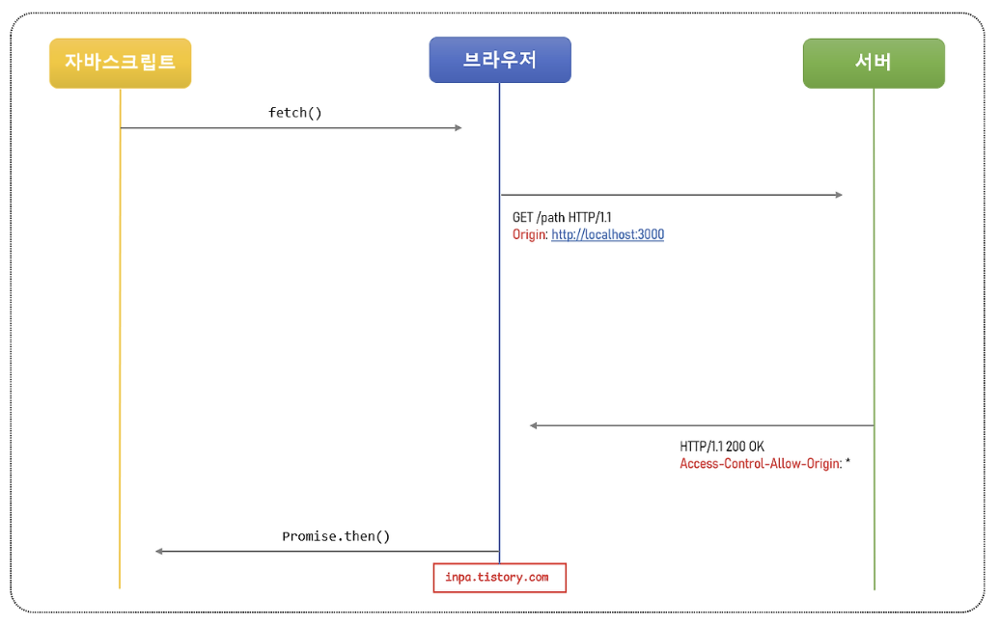
- 다만, 심플한만큼 특정조건을 만족하는 경우에만 예비요청을 생략할 수 있다.
- 대표적으로 3가지 경우를 만족할 때 가능하다.
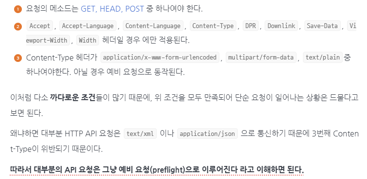
인증된 요청 (Credentialed Request)
인증된 요청은 클라이언트에서 서버에서 자격 인증 정보(Credential)를 실어 요청할 때 사용되는 요청이다.
여기서 말하는 자격 인증 정보란, 세션 ID가 저장되어 있는 쿠키 혹은 Authorization 헤더에 설정하는 토큰 값을 등을 일컫는다.
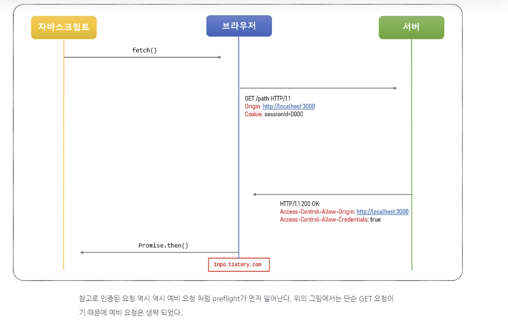